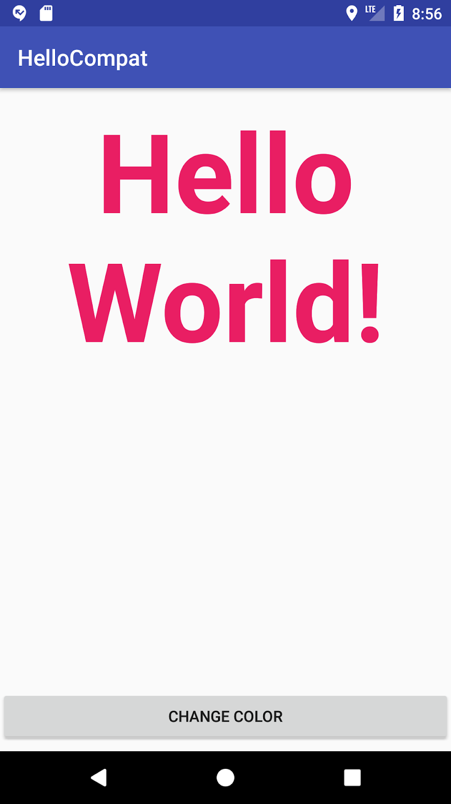
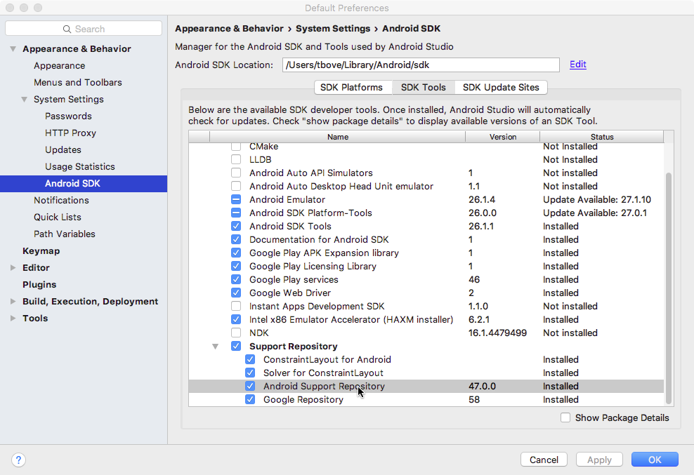
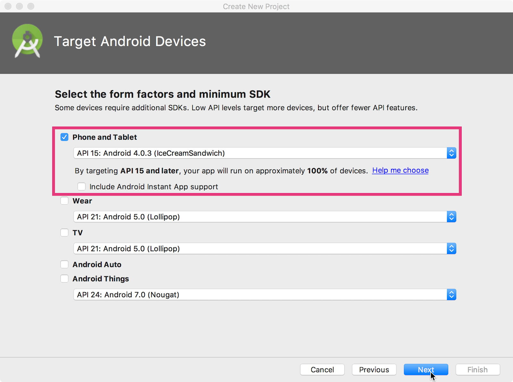
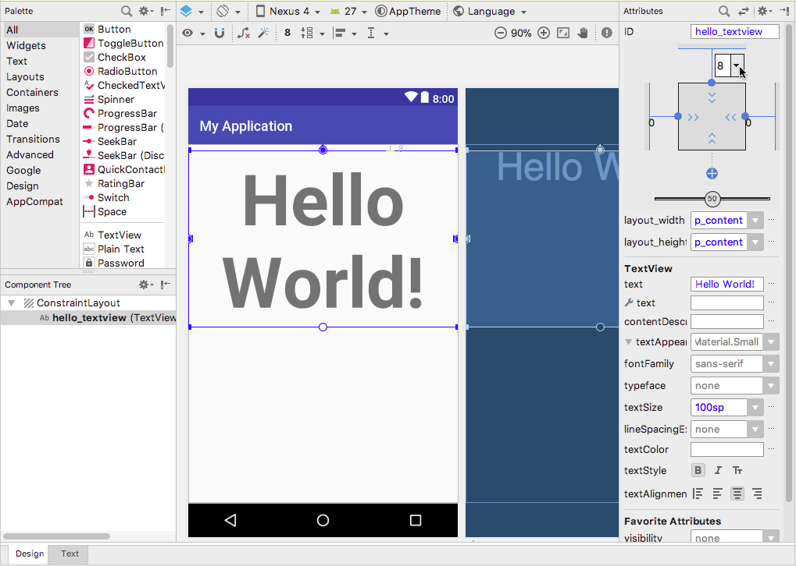
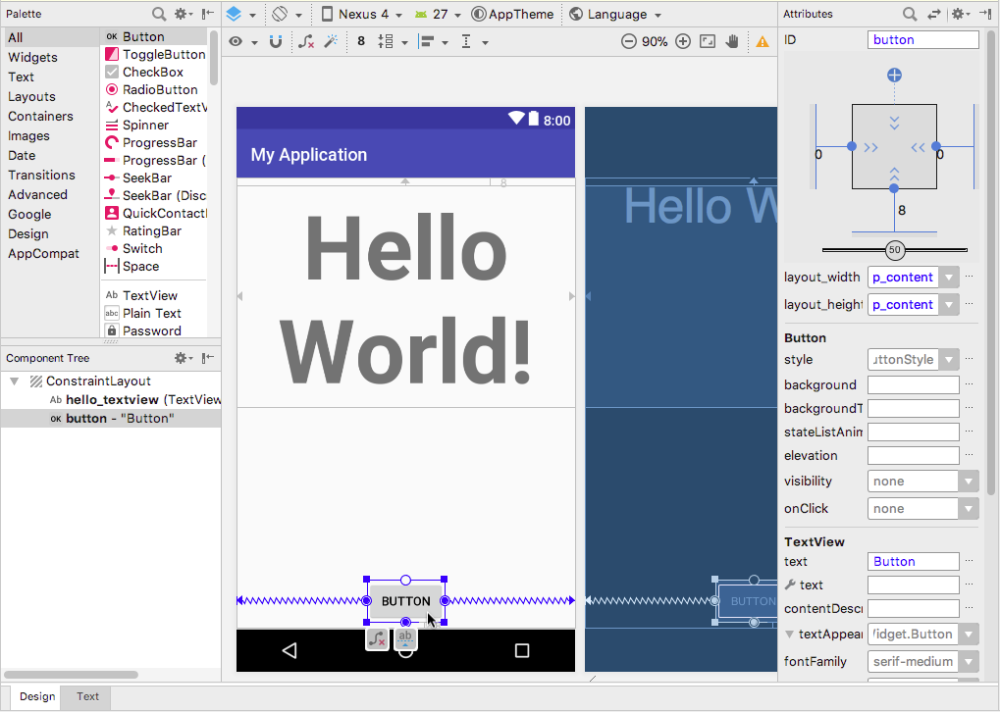
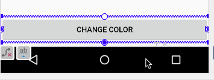
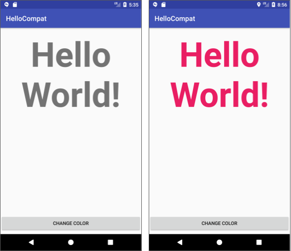

この実践的なコードラボはユニット 1: Android Developer Fundamentals (Version 2) コースの一部です。コードラボを順番に学習していくことで、このコースを最大限に活用することができます。
注：このコースでは、「codelab」と「practical」という用語を使い分けています。
序章
Android SDKには、いくつかのライブラリの集合体であるAndroidサポートライブラリが含まれています。これらのライブラリは、以下のようなAndroidフレームワークに組み込まれていない機能を提供します。
すでに知っておくべきこと
できるようになるはずです。
EditTextとButton要素を操作します。AndroidManifest.xml、リソース、Javaファイル、Gradleファイルなど、Android Studioプロジェクトの主要なコンポーネントを検索します。あなたが学ぶこと
compileSdkVersion、targetSdkVersion、minSdkVersionの値の違いの見分け方。あなたがすること
TextViewと1つのButtonで新しいアプリを作成します。build.gradleファイルを見てみましょう。この実習では、画面上に"Hello World"を表示する1つのTextViewと、テキストの色を変更する1つのButtonを持つHelloCompatと呼ばれるアプリを作成します。color.xmlファイル内のリソースとして定義されている20の色があり、各ボタンをクリックするたびにランダムにその色のうちの1つが選択されます。

アプリのリソースから色の値を取得するメソッドは、Android フレームワークのバージョンによって変更されています。この例では、Android サポート ライブラリの ContextCompat クラスを使用しており、すべてのバージョンで動作するメソッドを使用することができます。
このタスクでは、HelloCompatアプリの新しいプロジェクトを設定し、レイアウトと基本的な動作を実装します。
1.1 Androidサポートリポジトリが利用可能であることを確認する
Androidサポートライブラリは、Android SDKの一部としてダウンロードされ、Android SDKマネージャで利用できます。Android Studioでは、サポートライブラリのローカルリポジトリであるAndroidサポートリポジトリを使用して、Gradleのビルドファイルからライブラリにアクセスします。このタスクでは、Androidサポートリポジトリがダウンロードされ、プロジェクトで利用可能であることを確認します。
Android SDK Default Preferences ペインが表示されます。

ステータス] 列に [インストール済み] と表示されれば、設定は完了です。キャンセルをクリックします。
インストールされていない」または「更新可能」と表示された場合は、「Android Support Repository」の横にあるチェックボックスをクリックします。チェックボックスの横にダウンロードアイコンが表示されます。OKをクリックします。
1.2 プロジェクトを設定して、build.gradleを調べる
対象となるAndroidデバイスのページでは、API 15: Android 4.0.3 (IceCreamSandwich)が最小SDKとして選択されています。これまでのレッスンで学んだように、これはアプリがサポートするAndroidプラットフォームの最も古いバージョンです。

Explore build.gradle (Module:app)
プロジェクト全体(build.gradle (Project: helpcompat)用のbuild.gradleは、アプリモジュール用のbuild.gradleとは別のファイルであることに注意してください。build.gradle (Module: app) ファイル内の
compileSdkVersion 行を探します。例えば、以下のようになります。compileSdkVersion 26コンパイルバージョンは、アプリがAndroid StudioでコンパイルされたAndroidフレームワークのバージョンです。新しいプロジェクトの場合、コンパイルバージョンは、インストールしたフレームワークAPIの最新のセットになります。この値は、Android Studio 自体と、古いまたは新しい API を使用している場合に Android Studio で取得する警告やエラーにのみ影響します。
数行下の defaultConfig セクションの minSdkVersion 行を探します。minSdkVersion 15最小バージョンは、アプリが動作する最も古いAndroid APIのバージョンです。これは、プロジェクトを作成したときにステップ1で選択したのと同じ番号です。Google Playストアでは、この番号を使用して、アプリが特定のユーザーのデバイスで実行できることを確認しています。また、Android Studioはこの番号を使用して、非推奨APIの使用を警告します。
defaultConfig セクションの targetSdkVersion 行を探します。例えば、以下のようになります。targetSdkVersion 26ターゲット バージョンは、アプリが設計およびテストされているAPIのバージョンを示します。AndroidプラットフォームのAPIがこの数字よりも高い場合（つまり、アプリが新しいデバイスで実行されている場合）、プラットフォームは、アプリが設計された方法で動作し続けるように互換性のある動作を有効にする場合があります。例えば、Android 6.0（API 23）では、新しいランタイム権限モデルが提供されています。アプリがより低いAPIレベルをターゲットにしている場合、プラットフォームは古いインストール時のパーミッションモデルにフォールバックします。
ターゲットSDKはコンパイルSDKと同じ番号になることもありますが、アプリをテストしたAPIの最新バージョンを示す低い番号になることが多いです。
dependencies {
implementation fileTree(dir: 'libs', include: ['*.jar'])
implementation 'com.android.support:appcompat-v7:26.1.0'
implementation
'com.android.support.constraint:constraint-layout:1.0.2'
testImplementation 'junit:junit:4.12'
androidTestImplementation 'com.android.support.test:runner:1.0.1'
androidTestImplementation
'com.android.support.test.espresso:espresso-core:3.0.1'
}新しいプロジェクトの依存関係のセクションには、Espresso と JUnit でのテストを可能にするためのいくつかの依存関係と、v7 appcompat サポートライブラリが含まれています。プロジェクト内のこれらのライブラリのバージョン番号は、ここに示されているものとは異なるかもしれません。
v7 appcompat サポートライブラリは、API 9 までの古いバージョンの Android の後方互換性を提供します。これには v4 compat ライブラリも含まれているので、両方を依存関係として追加する必要はありません。
ライブラリの現在のバージョン番号が、現在利用可能なライブラリのバージョン番号よりも低い場合、Android Studioはその行をハイライト表示し、新しいバージョンが利用可能であることを警告します（「A newer version of com.android.support:appcompat-v7 is available」）。バージョン番号を更新されたバージョンに編集します。
ヒント：ハイライトラインの任意の場所をクリックして、Alt+Enter
キー（Macの場合はOption+Return
キー）を押すこともできます。メニューから xx.xx.xx.x に変更を選択します。
必要に応じて compileSdkVersion 番号を更新します。サポート・ライブラリのメジャー・バージョン番号（最初の番号）が compileSdkVersion と一致している必要があります。サポート・ライブラリのバージョンを更新する際には、compileSdkVersionも一致するように更新する必要があるかもしれません。
compileSdkVersionを更新した場合は、SDKプラットフォームコンポーネントのインストールが必要になる場合があります。Install missing platform(s) and sync project をクリックして、このプロセスを開始します。
このタスクでは、MainActivity クラスのレイアウトと基本的な動作を実装します。
2**.1 レイアウトや色を変更する***。
このタスクでは、アプリのactivity_main.xmlレイアウトを変更します。
TextView属性を以下のように変更します。属性フィールド | 以下のように入力してください。 |
身分証明書 | ハローテキストビュー |
テキストスタイル | Ｂ（太字 |
テキストアラインメント | 段落アイコンを中央に配置 |
テキストサイズ | 百戦錬磨 |
これは、idをhello_textviewに設定したテキストビューにandroid:id属性を追加し、テキストの配置を変更し、テキストを太字にし、テキストサイズを100spに大きく設定します。
hello_textviewのTextViewの下部からレイアウトの下部に伸びる制約を削除し、TextViewがレイアウトの上部にスナップするようにして、以下のように上部余白に8(8dp)を選択します。
Buttonをレイアウトの一番下にドラッグして、レイアウトの左右と一番下に制約を加えます。
属性フィールド | 以下のように入力してください。 |
身分証明書 | カラーボタン |
文章 |
|
これでボタンは以下のようにレイアウトに表示されるはずです。

TextViewとButtonで"Hello Text!"と"Change Color"の文字列を抽出し、それらの文字列リソース名を入力します。Buttonに以下のandroid:onClick属性を追加します。android:onClick="changeColor"<color name="red">#F44336</color>
<color name="pink">#E91E63</color>
<color name="purple">#9C27B0</color>
<color name="deep_purple">#673AB7</color>
<color name="indigo">#3F51B5</color>
<color name="blue">#2196F3</color>
<color name="light_blue">#03A9F4</color>
<color name="cyan">#00BCD4</color>
<color name="teal">#009688</color>
<color name="green">#4CAF50</color>
<color name="light_green">#8BC34A</color>
<color name="lime">#CDDC39</color>
<color name="yellow">#FFEB3B</color>
<color name="amber">#FFC107</color>
<color name="orange">#FF9800</color>
<color name="deep_orange">#FF5722</color>
<color name="brown">#795548</color>
<color name="grey">#9E9E9E</color>
<color name="blue_grey">#607D8B</color>
<color name="black">#000000</color>これらの色の値と名前は、マテリアルデザイン - スタイル - カラーで定義されたAndroidアプリの推奨カラーパレットから来ています。コードはカラーRGB値を16進数で示しています。
2**.2 MainActivity**に動作を追加する
このタスクでは、プライベート変数を追加し、onCreate()とonSaveInstanceState()を実装して、プロジェクトのセットアップを終了します。
TextViewオブジェクトを保持するためのプライベート変数を追加します。private TextView mHelloTextView.
private TextView mHelloTextView;private String[] mColorArray = {"red", "pink", "purple", "deep_purple",
"indigo", "blue", "light_blue", "cyan", "teal", "green",
"light_green", "lime", "yellow", "amber", "orange", "deep_orange",
"brown", "grey", "blue_grey", "black" };各色名は、color.xml内の色リソースの名前に対応しています。
onCreate() メソッドで findViewById() を使用して TextView インスタンスへの参照を取得し、そのプライベート変数に代入します。mHelloTextView = findViewById(R.id.hello_textview);onCreate() で、保存されたインスタンスの状態があれば、それを復元します。// restore saved instance state (the text color)
if (savedInstanceState != null) {
mHelloTextView.setTextColor(savedInstanceState.getInt("color"));
}テキストの色を保存するために、MainActivityにonSaveInstanceState()メソッドを追加します。@Override
public void onSaveInstanceState(Bundle outState) {
super.onSaveInstanceState(outState);
// save the current text color
outState.putInt("color", mHelloTextView.getCurrentTextColor());
}以下は、これまでのHelloCompatアプリのXMLレイアウトの解決コードとMainActivityクラスのコードスニペットです。
XMLレイアウト
activity_main.xmlファイルのXMLレイアウトを以下に示します。ボタンのandroid:onClick属性のchangeColorクリックハンドラは、まだ定義されていないので赤で下線が引かれています。次のタスクで定義します。
<android.support.constraint.ConstraintLayout xmlns:android="http://schemas.android.com/apk/res/android"
xmlns:app="http://schemas.android.com/apk/res-auto"
xmlns:tools="http://schemas.android.com/tools"
android:layout_width="match_parent"
android:layout_height="match_parent"
tools:context="com.example.android.myapplication.MainActivity">
<TextView
android:id="@+id/hello_textview"
android:layout_width="wrap_content"
android:layout_height="wrap_content"
android:layout_marginTop="8dp"
android:text="@string/hello_world"
android:textAlignment="center"
android:textSize="100sp"
android:textStyle="bold"
app:layout_constraintLeft_toLeftOf="parent"
app:layout_constraintRight_toRightOf="parent"
app:layout_constraintTop_toTopOf="parent" />
<Button
android:id="@+id/color_button"
android:layout_width="0dp"
android:layout_height="wrap_content"
android:layout_marginBottom="8dp"
android:text="@string/change_color"
app:layout_constraintBottom_toBottomOf="parent"
app:layout_constraintLeft_toLeftOf="parent"
app:layout_constraintRight_toRightOf="parent"
android:onClick="changeColor"/>
</android.support.constraint.ConstraintLayout>MainActivity
MainActivityクラスには、クラスの先頭に以下のプライベート変数が含まれています。
// Text view for Hello World.
private TextView mHelloTextView;
// array of color names, these match the color resources in color.xml
private String[] mColorArray = {"red", "pink", "purple", "deep_purple",
"indigo", "blue", "light_blue", "cyan", "teal", "green",
"light_green", "lime", "yellow", "amber", "orange", "deep_orange",
"brown", "grey", "blue_grey", "black" };
MainActivity クラスには、以下の onCreate() メソッドと onSaveInstanceState() メソッドがあります。
@Override
protected void onCreate(Bundle savedInstanceState) {
super.onCreate(savedInstanceState);
setContentView(R.layout.activity_main);
mHelloTextView = findViewById(R.id.hello_textview);
// restore saved instance state (the text color)
if (savedInstanceState != null) {
mHelloTextView.setTextColor(savedInstanceState.getInt("color"));
}
}
@Override
public void onSaveInstanceState(Bundle outState) {
super.onSaveInstanceState(outState);
// save the current text color
outState.putInt("color", mHelloTextView.getCurrentTextColor());
}HelloCompatアプリのChange Colorボタンは、color.xmlリソースファイルから20色のうちの1つをランダムに選択し、テキストの色をその色に設定します。このタスクでは、ボタンクリックハンドラの動作を実装します。
2.1 changeButton()クリックハンドラの追加
Button要素内のandroid:onClick属性の「changeColor」をクリックします。Alt+Enter（Macの場合はOption+Enter）を押して、Create onClickイベントハンドラを選択します。これは、MainActivityのchangeColor()メソッドのプレースホルダメソッドのスタブを作成します。
public void changeColor(View view) {
}
2.2 ボタンアクションの実装
changeColor()メソッドでは、Randomクラス(Javaクラス)を使って単純な乱数を生成することで、乱数オブジェクトを作成します。Random random = new Random();mColorArray 配列からランダムな色を選択します。String colorName = mColorArray[random.nextInt(20)];引数 20 を指定した nextInt() メソッドは、0 から 19 の間の別のランダムな整数を取得します。その整数を配列のインデックスとして使用して色名を取得します。
int colorResourceName = getResources().getIdentifier(colorName,
"color", getApplicationContext().getPackageName());アプリがコンパイルされると、Android システムは XML ファイル内の定義を内部整数 ID を持つリソースに変換します。名前と値の両方に別々の ID があります。この行は、colorName 配列の色文字列を XML リソース ファイル内の対応する色名 ID と一致させます。getResources() メソッドは、アプリのすべてのリソースを取得します。getIdentifier() メソッドは、現在のパッケージ名のカラー リソース ("color") のカラー名 (文字列) を検索します。
colorRes変数に代入し、getTheme()メソッドを使って現在のアプリケーションコンテキストのテーマを取得します。int colorRes =
getResources().getColor(colorResourceName, this.getTheme());getResources()メソッドはアプリのリソースのセットを取得し、getColor()メソッドはそれらのリソースから色名のIDで特定の色を取得します。ただし、getColor()では赤の下線が強調されています。
getColor()を指差すとAndroid Studioが報告してくる。"Call requires API 23 (current min is 15)" と報告されます。minSdkVersionが15なので、API 15以降に導入されたAPIを使用しようとすると、このメッセージが表示されます。アプリをコンパイルすることはできますが、このバージョンの getColor() は API 23 より前のデバイスでは使用できないため、ユーザーが [Change Color] ボタンをタップするとアプリがクラッシュします。
この段階では、プラットフォームのバージョンをチェックして、アプリが実行されている場所に応じて適切なバージョンの getColor() を使用することができます。古いAndroid APIと新しいAndroid APIの両方を警告なしでサポートするより良い方法は、サポートライブラリの互換性クラスの1つを使用することです。
ContextCompatクラスを使用するようにcolorResの割り当て行を変更します。int colorRes = ContextCompat.getColor(this, colorResourceName);ContextCompat には、アプリケーションのコンテキストとアプリのリソースにおける API の違いに対応するための多くの互換性メソッドが用意されています。ContextCompat の getColor() メソッドは、現在のコンテキスト (ここでは Activity インスタンス、this) と色の名前の 2 つの引数を取ります。
サポート ライブラリでのこのメソッドの実装は、API の異なるバージョンでの実装の違いを隠しています。このメソッドは、コンパイルしたSDKや最小SDKのバージョンに関係なく、警告、エラー、クラッシュなしで呼び出すことができます。
mHelloTextView.setTextColor(colorRes);色の変更ボタンは、以下のようにアプリ内のテキストの色を変更できるようになりました。

メインアクティビティソリューション
以下はMainActivityのchangeColor()クリックハンドラです。
/**
* This method handles the click of the Change Color button by
* picking a random color from a color array.
*
* @param view The view that was clicked
*/
public void changeColor(View view) {
// Get a random color name from the color array (20 colors).
Random random = new Random();
String colorName = mColorArray[random.nextInt(20)];
// Get the color identifier that matches the color name.
int colorResourceName = getResources().getIdentifier(colorName,
"color", getApplicationContext().getPackageName());
// Get the color ID from the resources.
int colorRes = ContextCompat.getColor(this, colorResourceName);
// Set the text color.
mHelloTextView.setTextColor(colorRes);
}Android Studioプロジェクト
Android Studioプロジェクト。HelloCompat
注: コーディングの課題はすべて任意であり、後のレッスンの前提条件ではありません。
課題。アプリが API 23 よりも古いバージョンの Android をサポートするデバイスで実行されている場合、ContextCompat for を使用してカラー リソースを取得するのではなく、Build クラスの値のテストを使用して別の操作を実行します。
Androidサポートライブラリをインストールします。
Android は、異なる API バージョンに対してアプリがどのように動作するかを示すために、3 つのディレクティブを使用しています。
minSdkVersion: アプリがサポートする最小のAPIバージョン。compileSdkVersion: アプリをコンパイルするAPIのバージョン。targetSdkVersion: アプリが設計されたAPIのバージョン。プロジェクトの依存関係を管理するために
ContextCompat クラスは、古い API レベルと新しい API レベルの両方のコンテキストとリソース関連のメソッドとの互換性のためのメソッドを提供します。
関連概念のドキュメントは「3.3: Androidサポートライブラリ」にあります。
Android Studioのドキュメント。
Androidの開発者向けドキュメント。
他にもあります。
このセクションでは、インストラクターが主導するコースの一部として、このコードラボを通して作業する学生のための可能な宿題をリストアップします。以下のことをするかどうかはインストラクター次第です。
講師は、彼らが望むように少しまたは多くのようにこれらの提案を使用することができますし、彼らが適切であると感じる他の宿題を割り当てるために自由に感じるはずです。
もしあなた自身でこのコードラボに取り組んでいるのであれば、これらの宿題を使ってあなたの知識をテストしてみてはいかがでしょうか。
アプリを実行する
サポートライブラリを使用した実習で作成したHelloCompatアプリを開きます。
changeColor() メソッドの行にデバッガーのブレークポイントを設定します。int colorRes = ContextCompat.getColor(this, colorResourceName);
getColor() メソッドにステップインし、スタックの奥深くでメソッド呼び出しを追跡します。ContextCompat クラスがリソースから色を取得する方法を決定する方法、およびどの他のフレームワーク クラスを使用するかを調べます。クラスによっては、"ソースコードがバイトコードと一致しない"という警告が表示されることがあります。既知のソースファイルに戻るには Step Out をクリックするか、デバッガが勝手に戻るまで Step Into をクリックし続けてください。
以下の質問に答えてください。
質問1
ContextCompat.getColor() メソッドに最初に足を踏み入れたときに表示されるクラスはどれですか?1つ選んでください。
AppCompatActivity質問2
表示されるクラスで、ビルドバージョンがAPIバージョン23以降の場合に実行されるステートメントはどれか。1つ選んでください。
return context.getColor(id)。return context.getResources().getColor(id).throw new IllegalArgumentException("permission is null")。return mResources == null ? super.getResources() : mResources.質問3
ContextCompat.getColor() メソッドを getColor() メソッドに戻すと、アプリを実行したときに何が起こりますか？1つ選んでください。
minSdkVersionが15の場合、コードエディタではgetColorという単語に赤で下線が引かれています。ポインタをその上に合わせると、Android Studio は「Call requires API 23 (current min is 15)」と報告します。アプリを提出して採点を受ける
学年別ガイダンス
この宿題のために提出するアプリはありません。
To find the next practical codelab in the Android Developer Fundamentals (V2) course, see Codelabs for Android Developer Fundamentals (V2).
For an overview of the course, including links to the concept chapters, apps, and slides, see Android Developer Fundamentals (Version 2).